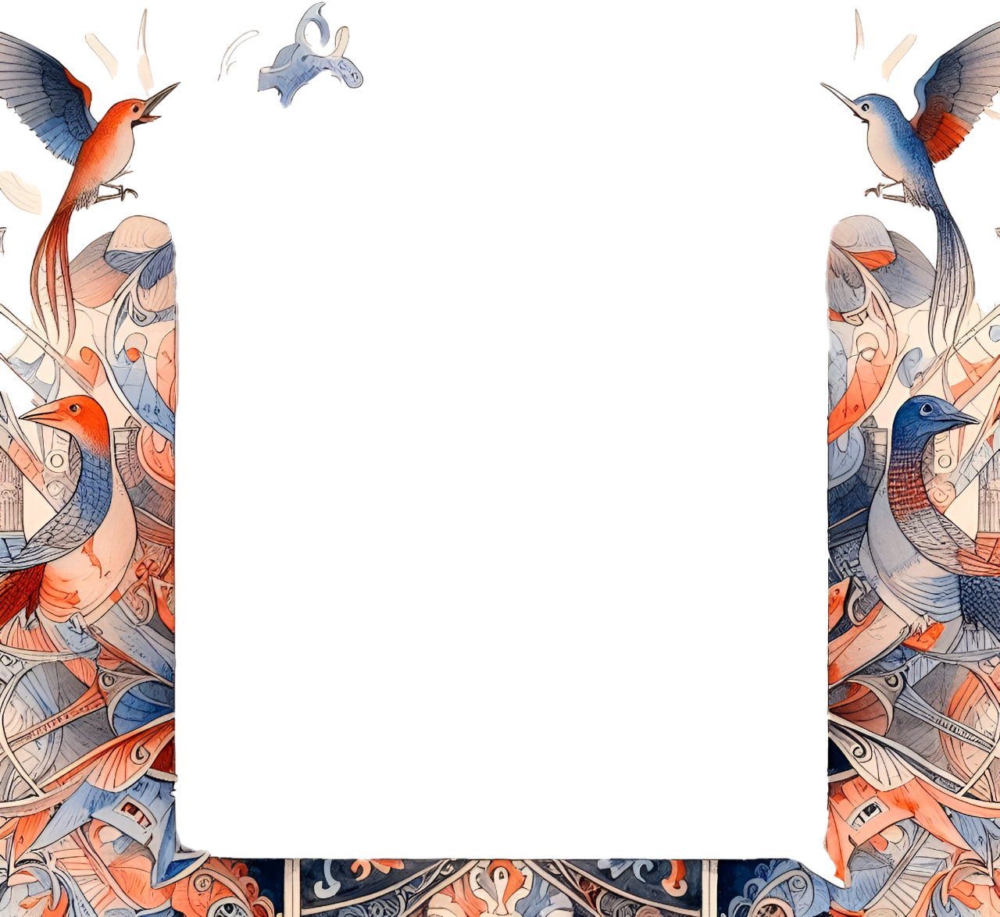

Maurice Ravel

Maurice Ravel fue un compositor francés nacido el 7 de marzo de 1875 en Ciboure, Francia, y fallecido el 28 de diciembre de 1937 en París. Es uno de los compositores más destacados del siglo XX y uno de los principales representantes del impresionismo musical. Ravel es conocido por su refinado sentido de la orquestación y su habilidad para crear colores y texturas musicales únicas. Su estilo es reconocible por su meticulosa artesanía, su uso de armonías ricas y su delicado equilibrio entre tradición y modernidad.